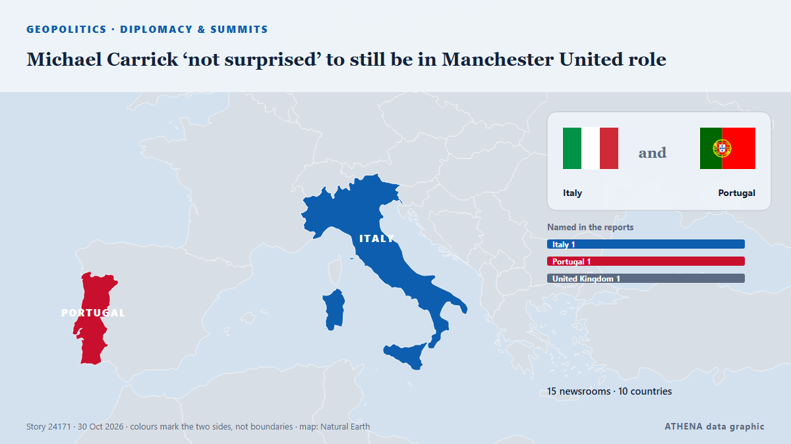

Michael Carrick ‘not surprised’ to still be in Manchester United role

AFC Bournemouth visit Old Trafford on Sunday buoyed by a European win against seven-time continental champions AC Milan. από The National
Αναφέρθηκε ανεξάρτητα από 15 μέσα σε 10 χώρες από τις 23 Οκτ, πρώτο το The National· η κάλυψη κορυφώνεται. Το ATHENA εκτιμά τον κίνδυνο μέτριο (2.7/10), κυρίως λόγω της σοβαρότητάς του και της εμβέλειάς του. Βεβαιότητα 87% (υψηλή): το επιβεβαιώνουν 15 ανεξάρτητα μέσα, μέση αξιοπιστία 72%. Μέσα ανά χώρα: Ηνωμένο Βασίλειο (29), Νιγηρία (3), Ηνωμένα Αραβικά Εμιράτα (2). Κάλυψη: 23 Οκτ έως 27 Οκτ, 100 ώρες.
Γιατί έχει σημασία: Οι εξελίξεις στην ασφάλεια και τη διπλωματία μπορούν να μετατοπίσουν συμμαχίες, εμπόριο και αγορές πολύ πέρα από τις χώρες που εμπλέκονται.
Τι άλλαξε: 13 νέες αναφορές από 7 μέσα στο 24ωρο έως 30 Οκτ.
Πρώτη διατύπωση: Michael Carrick to stay on as Manchester United manager
Οι τίτλοι των ειδήσεων παρουσιάζονται στα αγγλικά, όπως δημοσιεύτηκαν.
Με μια ματιά
Επιλέγεται, βαθμολογείται και γράφεται από τη δημοσιευμένη μεθοδολογία του ATHENA. Κανένας συντάκτης δεν παρεμβαίνει σε μεμονωμένα γεγονότα. Πώς παράγεται ›
| 23 Oct 10:40 UTC | 1 |
|---|---|
| 23 Oct 16:40 UTC | 0 |
| 23 Oct 22:40 UTC | 0 |
| 24 Oct 04:40 UTC | 1 |
| 24 Oct 10:40 UTC | 0 |
| 24 Oct 16:40 UTC | 0 |
| 24 Oct 22:40 UTC | 0 |
| 25 Oct 04:40 UTC | 0 |
| 25 Oct 10:40 UTC | 2 |
| 25 Oct 16:40 UTC | 3 |
| 25 Oct 22:40 UTC | 0 |
| 26 Oct 04:40 UTC | 6 |
| 26 Oct 10:40 UTC | 5 |
| 26 Oct 16:40 UTC | 2 |
| 26 Oct 22:40 UTC | 1 |
| 27 Oct 04:40 UTC | 5 |
| 27 Oct 10:40 UTC | 18 |
| 27 Oct 16:40 UTC | 1 |
| 27 Oct 22:40 UTC | 0 |
| 28 Oct 04:40 UTC | 4 |
| 28 Oct 10:40 UTC | 3 |
| 28 Oct 16:40 UTC | 0 |
| 28 Oct 22:40 UTC | 0 |
| 29 Oct 04:40 UTC | 3 |
| 29 Oct 10:40 UTC | 8 |
| 29 Oct 16:40 UTC | 1 |
| 29 Oct 22:40 UTC | 0 |
| 30 Oct 04:40 UTC | 2 |
| 23 Oct 10:48 UTC | 0.0 |
|---|---|
| 26 Oct 10:17 UTC | 1.5 |
| 26 Oct 14:17 UTC | 2.6 |
| 30 Oct 06:00 UTC | 2.7 |
Γιατί αυτοί οι αριθμοί
Σημασία
Κίνδυνος
Βεβαιότητα
Η κάλυψη — ποιος το ανέφερε και πότε
ο τίτλος όπως δημοσιεύτηκε · ανοίγει το πρωτότυπο- The National · Ηνωμένα Αραβικά ΕμιράταMichael Carrick does not have support of all Man United players but manager alone can't be held responsible
- Daily Trust · ΝιγηρίαCarrick cannot solve United’s problems with optimism alone
- Evening Standard (London) · Ηνωμένο ΒασίλειοMichael Carrick sack decision looms as new favourite to be Manchester United manager emerges
- Evening Standard (London) · Ηνωμένο ΒασίλειοManchester United 0-3 Bournemouth: Michael Carrick on the brink of being sacked
- Evening Standard (London) · Ηνωμένο ΒασίλειοMichael Carrick responds to Manchester United sack claims after Old Trafford 'farewell'
- Al Jazeera English · ΚατάρWill Michael Carrick be sacked? Man United manager says he doesn’t know
- Punch · ΝιγηρίαEPL: I’m not expecting to be sacked, says Carrick
- Manchester Evening News · Ηνωμένο Βασίλειο'Something has got to change' - Harry Maguire backs Michael Carrick despite torrid Man United form
- Manchester Evening News · Ηνωμένο ΒασίλειοMichael Carrick would never say this - but this is how Man United players are really behaving
- Manchester Evening News · Ηνωμένο ΒασίλειοNext Man United manager picked as Premier League rival given chance to finally 'prove himself'
- Evening Standard (London) · Ηνωμένο ΒασίλειοManchester United told to hire 'best manager in the Premier League' as Michael Carrick sack looms
- Manchester Evening News · Ηνωμένο ΒασίλειοMichael Carrick future LIVE: Man United sack timeline, Fernandes decision, board disagree
- Manchester Evening News · Ηνωμένο ΒασίλειοManchester United chiefs report to Carrington amid Michael Carrick talks
- The National · Ηνωμένα Αραβικά ΕμιράταManchester United: Five managers who could replace Michael Carrick
- Belfast Telegraph · Ηνωμένο ΒασίλειοMichael Carrick arrives at Man Utd training ground after talks about his future
- Manchester Evening News · Ηνωμένο ΒασίλειοWhy Michael Carrick has reported to Carrington amid Manchester United crisis talks
- Manchester Evening News · Ηνωμένο ΒασίλειοJose Mourinho's reaction to being booed after what Michael Carrick told Man United players
- Manchester Evening News · Ηνωμένο ΒασίλειοMichael Carrick leaves Carrington as talks over his Manchester United future take place
- The Irish News (Belfast) · Ηνωμένο ΒασίλειοManchester United stay tight-lipped on Michael Carrick future after day of talks
- Manchester Evening News · Ηνωμένο ΒασίλειοManchester United have only three players to build a team around
- Evening Standard (London) · Ηνωμένο ΒασίλειοMichael Carrick sack news LIVE: Manchester United latest as shock decision made
- Manchester Evening News · Ηνωμένο ΒασίλειοMichael Carrick arrives at Carrington but Manchester United confusion continues
- The Irish News (Belfast) · Ηνωμένο ΒασίλειοMichael Carrick future uncertain as he arrives at Man Utd’s training ground
- Belfast Telegraph · Ηνωμένο ΒασίλειοMichael Carrick future uncertain as he arrives at Man Utd’s training ground
- Belfast Telegraph · Ηνωμένο ΒασίλειοMan United’s problems are much bigger than Michael Carrick – and much harder to fix
- CNA (Channel NewsAsia) · ΣιγκαπούρηCarrick stays on as Man United manager, takes training after crisis talks
- Manchester Evening News · Ηνωμένο ΒασίλειοMichael Carrick to stay on as Manchester United manager
- Cyprus Mail · ΚύπροςCarrick stays on as Man United boss, takes training after crisis talks
- Evening Standard (London) · Ηνωμένο ΒασίλειοManchester United in Julian Nagelsmann verdict as Michael Carrick sack decision made
- The Irish News (Belfast) · Ηνωμένο ΒασίλειοMichael Carrick expected to remain in charge for Man Utd trip to Chelsea
- Belfast Telegraph · Ηνωμένο ΒασίλειοMichael Carrick expected to remain in charge for Man Utd trip to Chelsea
- RTÉ News · ΙρλανδίαCarrick to remain at Man United for at least the weekend
- Evening Standard (London) · Ηνωμένο ΒασίλειοManchester United make shock Michael Carrick sack decision before Chelsea clash
- The Herald · ΖιμπάμπουεMan Utd boss Michael Carrick to remain in charge vs Chelsea and given chance to turn situation around
- Manchester Evening News · Ηνωμένο ΒασίλειοMichael Carrick's telling response as Man United make U-turn on sacking him
- Manchester Evening News · Ηνωμένο ΒασίλειοPaul Scholes picks out Michael Carrick replacement 'miles' clear for Man United
- Manchester Evening News · Ηνωμένο ΒασίλειοPoll: Are Manchester United right to give Michael Carrick another chance?
- Vanguard · ΝιγηρίαCarrick to remain Man Utd boss for Chelsea clash – Reports
- Evening Standard (London) · Ηνωμένο Βασίλειο'Free three points': Chelsea fans react as Manchester United decide to not sack Michael Carrick
- Free Malaysia Today · ΜαλαισίαCarrick to remain Man Utd boss for Chelsea clash, say reports